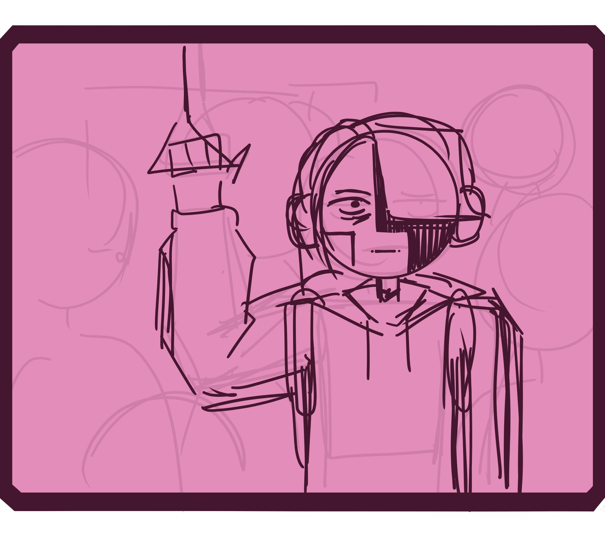

의미없이 시간을 보내고 싶지 않지만, 정작 하고 싶은 건 없다고요?

한때는 행복했던 인생, 재미가 없고 만사가 귀찮다고요?
(아직 작업중입니다..)
마음 속에서 왠지 모를 공허함이 느껴지신다고요?

의미없이 시간을 보내고 싶지 않지만, 정작 하고 싶은 건 없다고요?

한때는 행복했던 인생, 재미가 없고 만사가 귀찮다고요?
(아직 작업중입니다..)
마음 속에서 왠지 모를 공허함이 느껴지신다고요?
제 관심사를, 당신에게.
깊게 몰두할 수 있는 분야,
그리고 몰두할 수 있는 능력까지!
관심사만을 삶의 원동력으로 삼아,
(만) 22년 살아온 제가 보장할 수 있는 강한 효력!
어떻게 가능하냐고요? 비결은 바로
SUBLIMINAL MESSAGING
WORK IN PROGRESS